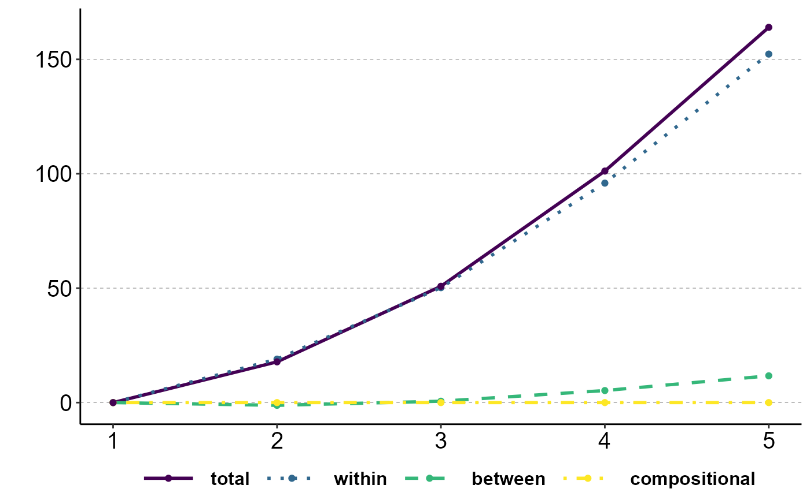
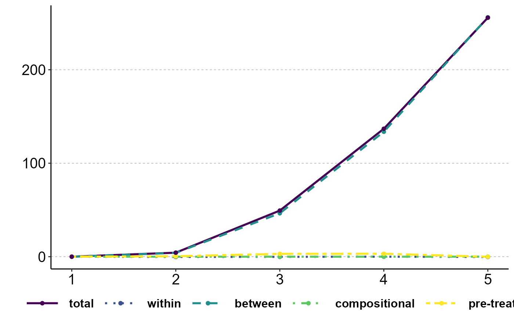

The ineqx package implements Rosche (202X). [...]
ineqx(
treat = NULL,
post = NULL,
y,
ystat = "Var",
group = NULL,
time = NULL,
weights = NULL,
controls = NULL,
decomp = "post",
ref = NULL,
AME_mu = NULL,
AME_sigma = NULL,
dat
)Character string. Treatment variable. Values must be 0/1
Character string. Before/after variable. Values must be 0/1
Character string. Dependent variable. Variable must be continuous.
Character string. Either "Var" (default) or "CV2". Choose to analyze (the effect of x on) the variance or squared coefficient of variation.
Character string. Variable must be categorical. Grouping variable to decompose variance into within- and between-group components.
Character string. c.x with specify penalized splines, i.x will specify dummies. Time variable to analyze change over time.
Character string. Weight variable.
Character vector with additional control variables. E.g. c("c.age", "i.sex", ...)
Character string. Either "post" (default) or "effect".
Number, vector, or list. Counterfactual reference point. See details.
Dataframe with average marginal effects (Mu)
Dataframe with average marginal effects (Sigma)
Dataframe
List with eight elements: "vars", "dMu", "dSigma", "dW", "dB", "dC", "dP", "dT". See details.
The main function of ineqx. [...]
Counterfactual reference point (ref)
ref can either be a number, c(number, "variable name"), or list(n=c(...), mu=c(...), sigma=c(...), beta=c(...), lambda=c(...)). [...]
Return
...
data(incdat)
# Descriptive variance decomposition
decomp_descr <- ineqx(y="inc", group="group", time="i.year", ref=1, dat=incdat)
#> Performing decomposition ...
#> Done.
plot(decomp_descr, type="dT")

# Causal variance decomposition
decomp_treat <- ineqx(treat="x", post="t", y="inc", group="group", time="i.year", ref=1, dat=incdat)
#> Running variance function regression ...
#> GAMLSS-RS iteration 1: Global Deviance = 8406.392
#> GAMLSS-RS iteration 2: Global Deviance = 8406.348
#> GAMLSS-RS iteration 3: Global Deviance = 8406.348
#> Computing average marginal effects ...
#> Performing decomposition ...
#> Done.
plot(decomp_treat, type="dT")
